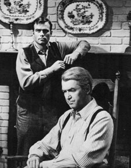
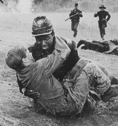

|
In 1965, Universal released Shenandoah, in which
James Stewart played Charlie Anderson, the patriarch of a
large Virginia family. Father to one daughter and six sons,
Charlie struggles to remain neutral as the war, which he
fervently believes "doesn't concern us" encroaches upon his
Shenandoah farm.
Widowed for sixteen years since the birth of his youngest
|

Jimmy Stewart as Charlie
Anderson.
|
son, Boy, Charlie has raised his family on love and respect.
To him, Boy is very special--the reflection of his late wife
Martha. His continuing love for Martha is naturally quite
palpable.
With increasing regularity, images of the war get closer.
The sounds of cannon fire disrupt the farm animals. His
eldest son Jacob questions why they don't fight--they are
Virginians, and "whatever concerns Virginia concerns us." At
Sunday Services, the pastor speaks on the duty of Virginians
to their state. A detachment of Confederate soldiers arrives
on the farm to enlist the Anderson boys. When the young
lieutenant tells Charlie that Virginia needs all of her
sons, Charlie sums up his feelings. "That might be so,
Johnson. But these are my sons. They don't belong to the
state," he asserts. "We never asked anything and we never
expected anything. We do our own living and thanks to no man
for the night." He does offer his sons the chance to join if
they want, but none makes an effort to do so.
Life on the farm goes on. Charlie's daughter, Jennie, is
being courted by Sam, a young Confederate officer. Charlie
becomes a grandfather as his daughter-in-law, Ann, gives
birth to a baby girl named Martha. Yet there is always the
reminder of war. On Jennie's wedding day, immediately after
the vows are said, Sam is called to duty and must leave.
Soon, the wall that Charlie has tried to build around his
family begins to crumble. Boy, out hunting one day with his
friend Gabriel (a young slave from a neighboring farm),
happens across a Yankee patrol that mistakes Boy for a
Confederate soldier. They capture him, but allow Gabriel to
go free. Gabriel runs to the Anderson farm to tell Charlie
that Boy has been taken. Upon hearing the news, Charlie
responds firmly, "Now it concerns us." Leaving son James and
his wife Ann to look after the farm and to take care of the
baby, Charlie and the rest leave in search of the boy. As
they travel through the Shenandoah Valley in their search,
|

Gabriel saves Boy.
|
they see the charred remains of a country at war. In an
effort to find the boy, they release Confederate prisoners
from a prisoner train and find Sam. After weeks of fruitless
search, they decide to return home. En route, Jacob is cut
down by a picket's bullet as they approach a Confederate
encampment. Although tempted, Charlie refrains from killing
the soldier who fired the shot. He is only sixteen, and
Charlie wants the boy's conscience to supply the punishment
for what he has done.
Boy, meanwhile, has escaped from a prison ship along with
other Confederates and travels with them to join a regiment.
His world has been turned upside down. Far from home, forced
to eat terrible food, he struggles to survive. One morning,
the unit is attacked by a Union patrol. All around Boy,
bullets fly, cannons explode, and men are dying. Boy is hit
in the leg and can't move, staring in horror at a Yankee
approaching him with bayonet ready to strike. But the Yankee
hesitates--it is the former slave Gabriel, who has run away
from the farm and joined the Union Army. With tears in his
eyes, Gabriel picks up Boy and moves him to the safety of a
nearby thicket. Despite the raging battle, Boy is safe.
Shocking news greets Charlie as he and the others arrive
home with Jacob's body. Although the baby is unharmed, James
and Ann have been murdered, ostensibly by scavengers.
Charlie is devastated that his world is disintegrating
around him. Confused, and in the hope of finding some
answers, he goes to Martha's grave, who has been the source
of his strength for years. It is here that he is reminded of
her last request--that he continue to believe in the Lord.
Needing such strength, and it being Sunday, he gathers the
remains of his family and leaves for services. During the
service, Boy, on crutches, enters and hobbles to the open
and loving arms of his father. Charlie Anderson has survived
the war, but it has cost him a heavy price.
Actual location filming was done in the Mohawk Valley
near Eugene, Oregon. Students from the University of Oregon
were hired as extras for the reenactment of the battle
scenes. Universal felt that filming in Oregon would be less
expensive than sending the film company to Virginia. Yet the
costs of filming on location are interesting. One meal for
the cast and crew cost $3,500 a day. It took 8 buses and 12
cars to transport the company to the filming site, at a cost
of $6,500 a week. The 120 horses hired for the film were
rented for $4,000 a week, not including the price of over
seven tons of hay a day for feed. The farmhouse and church
exteriors were filmed at the Disney Ranch near Newhall,
outside Los Angeles. All remaining scenes, including the
train sequence and interiors, were shot at Universal
Studios.
Shenandoah opened to rave reviews upon its release, many
agreeing that it was a warm, human family drama that tugged
at the emotions. It became the basis for a Broadway musical
in the 1970s when the story was revived and set to music,
with the part of Charlie Anderson played by John Riatt.
The movie's underlying anti-war theme was timely, being
released as it was on the eve of the United States' struggle
through the Vietnam era. And it was also sadly
prophetic--James Stewart's only son was killed during that
tragic conflict.
Source: John M. Cassidy, Civil War Cinema: A Pictorial History of Hollywood and the War Between the States
(Missoula, MT: Pictorial Histories Publishing Company, 1986), 68-74.
|